Each skill is a ladder: a fully worked example in the solid-framed box, then four YOUR TURN questions in the dashed box — same skill, new substances, no help. Work all four before checking the gray check: line; a tracker tick needs all four right first time.
This chapter is worth more than its size suggests. Chapter 10 feeds six different CED topics, and Unit 3 — your heaviest at 18–22% of the exam — draws on it directly. Nearly everything here is assessed. Only Ladder 12 (phase diagrams) sits outside the CED, and it is included because it explains the rest. The whole chapter in one sentence. Everything a liquid or solid does — boils high or low, flows thick or thin, shatters or bends, conducts or insulates — follows from what holds its particles together and how strongly. The one habit that carries the whole chapter. Before answering anything, identify the particles and the force between them. Ninety percent of Chapter 10 questions collapse the moment you do.Ladder 1 • Identifying intermolecular forces
ZUM §10.1An intermolecular force acts between particles. It is never the bond inside a molecule — and confusing the two is the error this chapter punishes hardest.
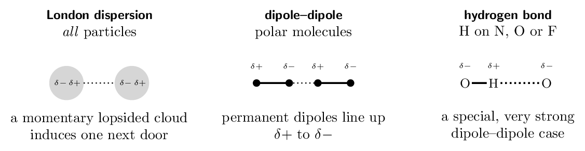
- \(\ce{CO2}\) LDF only
- \(\ce{NH3}\) LDF, dipole–dipole, H-bonding
- \(\ce{HCl}\) LDF, dipole–dipole
- \(\ce{CH3CH2OH}\) in water LDF, dipole–dipole, H-bonding
(a) LDF only (b) LDF, dipole–dipole, H-bonding (c) LDF, dipole–dipole (d) LDF, dipole–dipole, H-bonding
Ladder 2 • Dispersion forces and polarizability
ZUM §10.1Dispersion forces are the weakest per contact and yet they decide most boiling points, because they grow with the size of the electron cloud — and clouds get large fast.
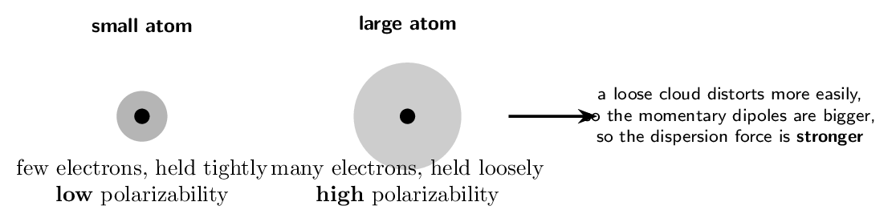
Shape matters too. Two molecules of identical formula can have different boiling points if one presents more surface to its neighbours.
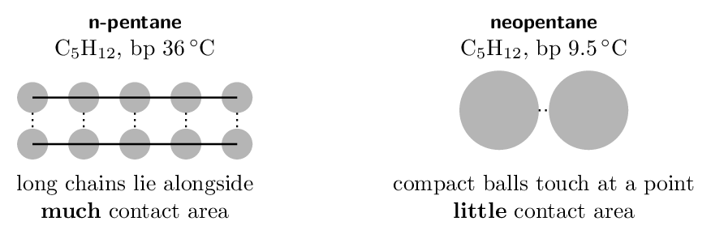
| electrons | boiling point | |||
|---|---|---|---|---|
| \(\ce{F2}\) | 18 | -188 | thinsp; | deg;C |
| \(\ce{Cl2}\) | 34 | -34 | thinsp; | deg;C |
| \(\ce{Br2}\) | 70 | 59 | thinsp; | deg;C |
| \(\ce{I2}\) | 106 | 184 | thinsp; | deg;C |
- Which has the higher boiling point, \(\ce{Ar}\) or \(\ce{Kr}\)? Why?
Kr
- Both \(\ce{CH4}\) and \(\ce{CCl4}\) are nonpolar. Which boils higher?
\(\ce{CCl4}\)
- Why does n-pentane boil higher than neopentane if they
have the same formula? more contact area
- Can dispersion forces alone make a substance a solid at room
temperature? Give evidence. yes — \(\ce{I2}\)
(a) Kr (b) \(\ce{CCl4}\) (c) more contact area (d) yes — \(\ce{I2}\)
Ladder 3 • Hydrogen bonding
ZUM §10.1Three elements only — N, O and F. They are small and highly electronegative, so the H they carry is left unusually bare, and it can approach a lone pair on the next molecule very closely.
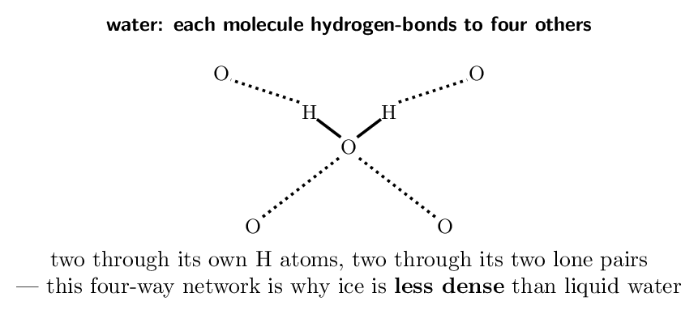
The clearest evidence that hydrogen bonding is real is a graph. Boiling points normally rise down a group as clouds grow. In three groups the first member breaks the rule badly.
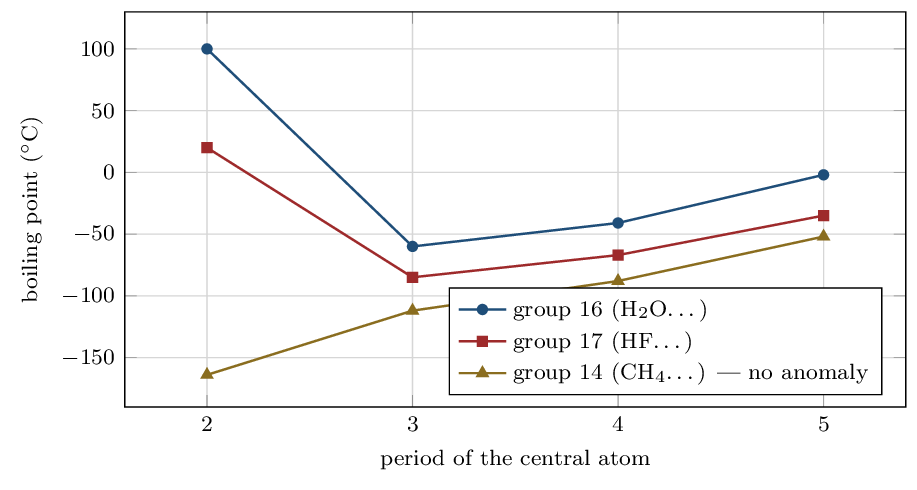
- Can \(\ce{HCl}\) hydrogen-bond? Explain. no — Cl is not N, O or F
- \(\ce{CH3OCH3}\) and \(\ce{CH3CH2OH}\) have the same formula
\(\ce{C2H6O}\). Which boils higher, and why? ethanol, it has \(\ce{-OH}\)
- Why does the group-14 line show no anomaly?
carbon is not N, O or F
- Why does ice float? the H-bond network holds molecules further apart
(a) no — Cl is not N, O or F (b) ethanol, it has \(\ce{-OH}\) (c) carbon is not N, O or F (d) the H-bond network holds molecules further apart
Ladder 4 • Ranking boiling points
ZUM §10.1–10.2The chapter's most-asked question type. There is a fixed order of priority, and following it beats intuition every time.
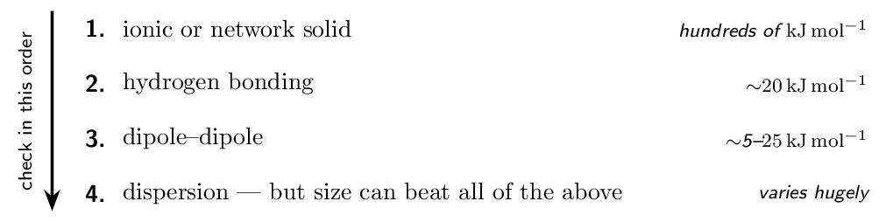
Rule 4 is the one that catches people. Dispersion is weakest per interaction, but it scales without limit — so \(\ce{I2}\) (dispersion only) boils at 184 °C while \(\ce{H2O}\) (hydrogen bonded) boils at 100 °C. Compare like with like: rank by force type only when the molecules are of similar size, and by size when the force types match.
| particles | strongest force | electrons | |
|---|---|---|---|
| \(\ce{CH4}\) | molecules | dispersion only | 10 |
| \(\ce{CH3F}\) | molecules | dipole–dipole | 18 |
| \(\ce{CH3OH}\) | molecules | hydrogen bonding | 18 |
| \(\ce{NaCl}\) | ions | ionic (not an IMF at all) | — |
- Rank by increasing boiling point: \(\ce{Ne}\), \(\ce{HF}\), \(\ce{Xe}\).
Ne \(<\) Xe \(<\) HF
- Rank by increasing boiling point: \(\ce{C2H6}\), \(\ce{CH3OH}\),
\(\ce{CH3Cl}\). \(\ce{C2H6}\) \(<\) \(\ce{CH3Cl}\) \(<\) \(\ce{CH3OH}\)
- Which boils higher, \(\ce{H2O}\) or \(\ce{I2}\)? What does the answer
show? \(\ce{I2}\) — size can beat force type
- Why does \(\ce{MgO}\) melt so much higher than \(\ce{NaCl}\)?
\(2+/2-\) charges instead of \(1+/1-\)
(a) Ne \(<\) Xe \(<\) HF (b) \(\ce{C2H6}\) \(<\) \(\ce{CH3Cl}\) \(<\) \(\ce{CH3OH}\) (c) \(\ce{I2}\) — size can beat force type (d) \(2+/2-\) charges instead of \(1+/1-\)
Ladder 5 • Surface tension, viscosity, capillary action
ZUM §10.2Three liquid properties, one explanation: all three measure how strongly the molecules hold each other.
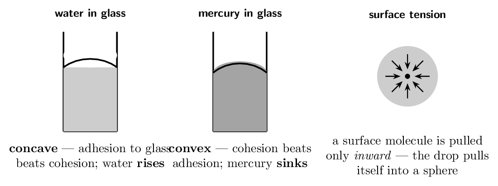
- Which has the higher surface tension, water or hexane? Why?
water — hydrogen bonding
- Why is glycerol far more viscous than ethanol?
three \(\ce{-OH}\) groups
- Why does water's meniscus curve up but mercury's curve down?
adhesion vs cohesion
- What happens to a liquid's viscosity as it is heated? Explain.
it falls
(a) water — hydrogen bonding (b) three \(\ce{-OH}\) groups (c) adhesion vs cohesion (d) it falls
Ladder 6 • Metallic solids and the electron sea
ZUM §10.3–10.4A metal is a lattice of cations sitting in a sea of electrons that belong to no particular atom. Every metallic property follows from those mobile electrons.
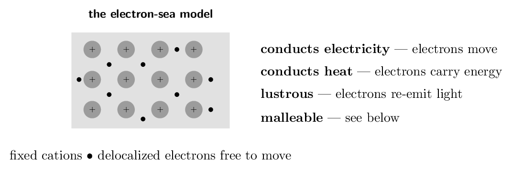
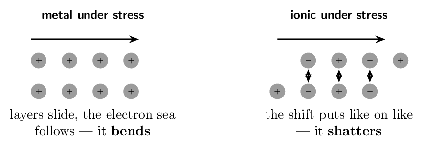
- Why does a metal conduct electricity as a solid but \(\ce{NaCl}\)
does not? delocalized electrons vs locked ions
- Why is an ionic crystal brittle? a shift puts like charges together
- An unknown solid conducts when molten but not when solid. What
type is it? ionic
- Why do metals conduct heat well? mobile electrons carry the energy
(a) delocalized electrons vs locked ions (b) a shift puts like charges together (c) ionic (d) mobile electrons carry the energy
Ladder 7 • Unit cells and counting atoms
ZUM §10.4A crystal is one small pattern repeated. The unit cell is that pattern, and the trick is that atoms on the boundary are shared with neighbouring cells.
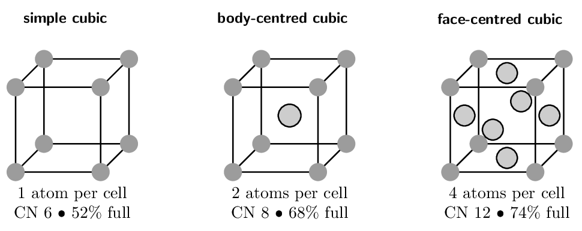
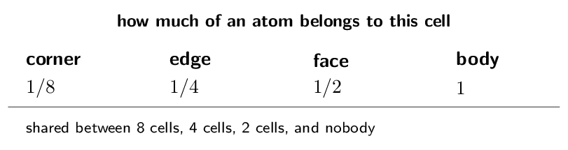
- How many atoms are in a body-centred cubic unit cell? Show the
count.
- How many are in a simple cubic cell?
- Which packs most efficiently, and what fraction of space is
empty in it? fcc/hcp, 26% empty
- A cell has atoms at all 8 corners and 1 in the centre of each of
2 opposite faces. How many atoms per cell?
(a) 2 (b) 1 (c) fcc/hcp, 26% empty (d) 2
Ladder 8 • Alloys
ZUM §10.4An alloy is a metal mixed with something else while molten. There are two ways the guest can sit in the host lattice, and they have different consequences.
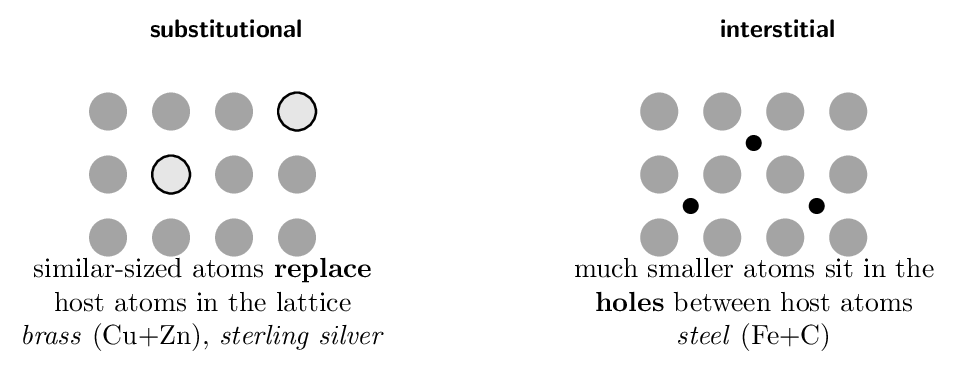
- Classify brass (\(\ce{Cu}\) with \(\ce{Zn}\)) and say why.
substitutional — similar radii
- Classify steel and say why. interstitial — C is much smaller
- Why is steel harder than pure iron? interstitials block layer sliding
- Would a guest atom twice the host's diameter form an
interstitial alloy? Explain. no — far too large for the holes
(a) substitutional — similar radii (b) interstitial — C is much smaller (c) interstitials block layer sliding (d) no — far too large for the holes
Ladder 9 • Network covalent and molecular solids
ZUM §10.5–10.6The largest gap in properties anywhere in chemistry sits between these two, and both are made only of nonmetals.
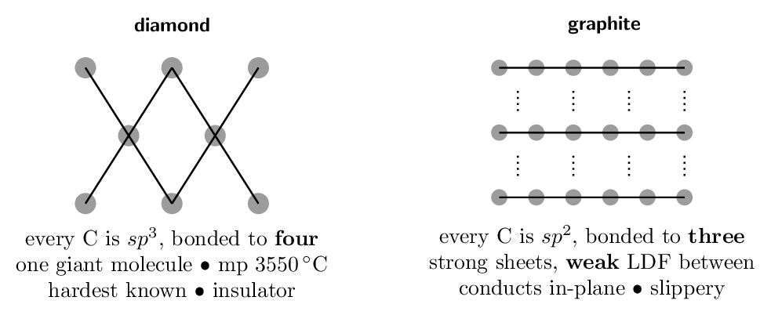
A table for the four solid types, and the way a question will hand them to you — as properties, not as names.
| type | particles | force | melting pt | conducts? |
|---|---|---|---|---|
| ionic | ions | ionic attraction | high | molten/aq only |
| metallic | cations \(+\) e\(^-\) | metallic bond | varies wildly | always |
| network | atoms | covalent bonds | very high | no (graphite yes) |
| molecular | molecules | IMF | low | no |
Very low melting point rules out ionic, network and most metals at once. No conduction in any state rules out metallic (which conducts solid) and ionic (which conducts molten). Softness confirms it. This is a molecular solid: the particles are whole molecules, and melting only has to overcome intermolecular forces — no bond breaks at all.
The diagnostic question is always the same: what has to break for this to melt? A molecular solid breaks weak forces between molecules; a network solid breaks covalent bonds themselves. That single difference spans 3600 °C.- \(\ce{SiO2}\) melts at 1610 °C; \(\ce{CO2}\) melts at
-57 °C under pressure, and at 1 does not
melt at all but sublimes at -78 °C. Both are
group-14 dioxides. Explain. \(\ce{SiO2}\) is network, \(\ce{CO2}\) molecular
- Why is graphite soft when diamond is the hardest substance
known? sheets slide on weak LDF
- Why does graphite conduct but diamond not? a delocalized fourth electron
- A solid is hard, melts above 2000 °C, and does not
conduct even when molten. Classify it. network covalent
(a) \(\ce{SiO2}\) is network, \(\ce{CO2}\) molecular (b) sheets slide on weak LDF (c) a delocalized fourth electron (d) network covalent
Ladder 10 • Ionic solids
ZUM §10.7An ionic crystal is built so that each ion is surrounded by as many oppositely charged neighbours as will geometrically fit — which is what makes lattice energies so large.
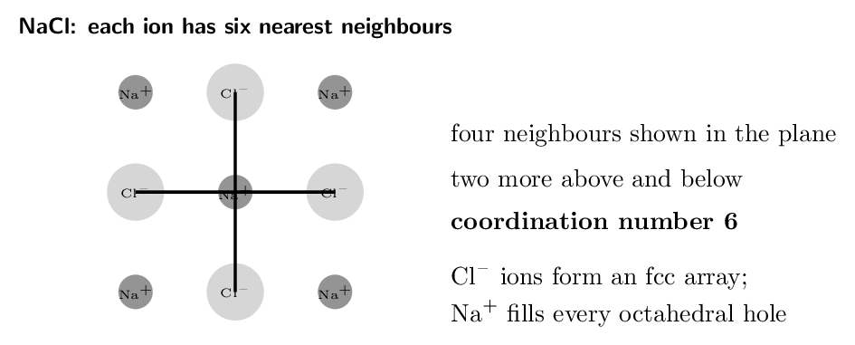
- What is the coordination number of \(\ce{Na+}\) in \(\ce{NaCl}\)?
- A cell has \(\ce{X}\) at 8 corners and \(\ce{Y}\) at the body centre.
Give the formula. \(\ce{XY}\)
- Why does \(\ce{MgO}\) have a much larger lattice energy than
\(\ce{NaCl}\)? \(2+/2-\) charges
- Why is it wrong to speak of an “\(\ce{NaCl}\) molecule”?
each ion binds six others equally
(a) 6 (b) \(\ce{XY}\) (c) \(2+/2-\) charges (d) each ion binds six others equally
Ladder 11 • Vapour pressure and heating curves
ZUM §10.8Vapour pressure is the pressure of vapour standing above its own liquid in a closed container once evaporation and condensation have come into balance.
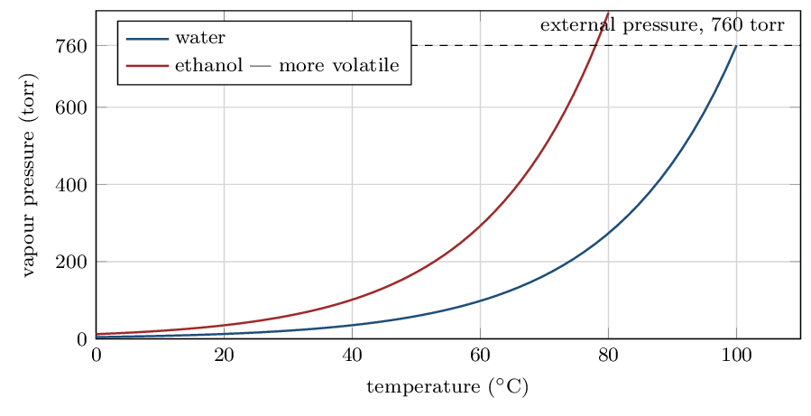
A liquid boils at the temperature where its vapour pressure equals the external pressure. Nothing about 100 °C is special to water — it is the temperature at which water's vapour pressure happens to reach 760 . Lower the external pressure and the boiling point falls with it, which is why water boils near 95 °C in Denver and why food takes longer to cook there.
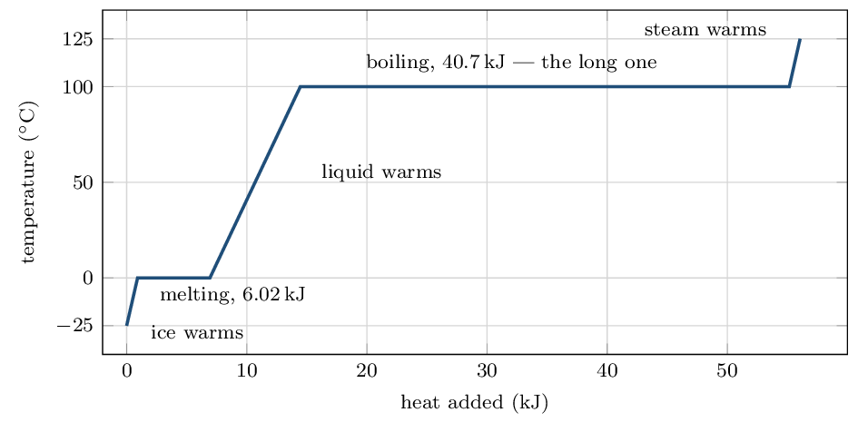
Five segments, and you must not merge them. Use \(c_{\text{ice}} = 2.03\,\mathrm{J/g/{}^\circ C}\), \(c_{\text{water}} = 4.18\,\mathrm{}\), \(c_{\text{steam}} = 2.01\,\mathrm{}\), \(\Delta H_{\text{fus}} = 6.02\,\mathrm{kJ/mol}\), \(\Delta H_{\text{vap}} = 40.7\,\mathrm{kJ/mol}\). Note 18.0 g is exactly 1.00 mol.
1. Warm the ice, \(-25\) to 0 °C (use \(q = mc\Delta T\)): \[ q = 18.0 \times 2.03 \times 25 = 914\,\mathrm{J} = 0.91\,\mathrm{kJ} \] 2. Melt it (use \(n\Delta H\), and \(\Delta T = 0\)): \(q = 1.00 \times 6.02 = 6.02\,\mathrm{kJ}\) 3. Warm the water, 0 to 100 °C: \[ q = 18.0 \times 4.18 \times 100 = 7524\,\mathrm{J} = 7.52\,\mathrm{kJ} \] 4. Boil it: \(q = 1.00 \times 40.7 = 40.7\,\mathrm{kJ}\) 5. Warm the steam, 100 to 125 °C: \[ q = 18.0 \times 2.01 \times 25 = 905\,\mathrm{J} = 0.90\,\mathrm{kJ} \] Total: \[ 0.91 + 6.02 + 7.52 + 40.7 + 0.90 = \mathbf{56.1\,\mathrm{kJ}} \] Look at where the energy went. Boiling alone took 40.7 kJ — 73% of the total, and nearly seven times the cost of melting. Melting only loosens the hydrogen-bond network enough to let molecules slide; boiling has to break it completely and separate the molecules entirely. That ratio is why steam burns are so much worse than hot-water burns.- Why does temperature stay constant while ice melts?
energy breaks IMF, not raises KE
- Which requires more energy per mole for water, melting or
boiling? By roughly what factor? boiling, about \(7\times\)
- Why does water boil below 100 °C on a mountain?
lower external pressure
- Two liquids are at the same temperature; one has the higher
vapour pressure. Which has the stronger intermolecular forces?
the one with the lower vapour pressure
(a) energy breaks IMF, not raises KE (b) boiling, about \(7\times\) (c) lower external pressure (d) the one with the lower vapour pressure
Ladder 12 • Phase diagrams
ZUM §10.9Phase diagrams are not listed in the 2024 CED, so no question will ask you to draw or label one. They are here because they put Ladders 5 and 11 into a single picture, and because CED topics 3.3 (solids, liquids and gases) and 6.5 (energy of phase changes) both make more sense once you have seen one. Twenty minutes well spent, but skip it without cost if you are short of time.
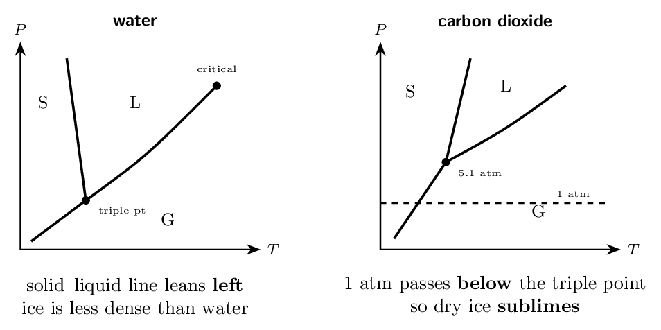
- What does the triple point represent? all three phases coexist
- Why does dry ice sublime at room pressure?
1 atm is below its triple point
- What is unusual about water's solid–liquid line, and why?
negative slope — ice is less dense
- Above the critical point, what phase is present?
a supercritical fluid — neither
(a) all three phases coexist (b) 1 atm is below its triple point (c) negative slope — ice is less dense (d) a supercritical fluid — neither
Mastery tracker
Tick a row only if all four YOUR TURN questions were right on the first attempt. Ladder 12 is outside the CED — an untickable row there costs you nothing.
| First try? | Skill | Ladder | If not, re-read… |
|---|---|---|---|
| \(\square\) | identifying IMFs | 1 | LDF always, then add |
| \(\square\) | dispersion and polarizability | 2 | cloud size and shape |
| \(\square\) | hydrogen bonding | 3 | N, O, F only |
| \(\square\) | ranking boiling points | 4 | classify before comparing |
| \(\square\) | surface tension, viscosity | 5 | cohesion vs adhesion |
| \(\square\) | metals and the electron sea | 6 | non-directional bonding |
| \(\square\) | unit cells, counting atoms | 7 | corner \(1/8\), face \(1/2\) |
| \(\square\) | alloys | 8 | size decides the type |
| \(\square\) | network and molecular solids | 9 | what breaks on melting |
| \(\square\) | ionic solids | 10 | formula is a ratio |
| \(\square\) | vapour pressure, heating curves | 11 | flat means IMF |
| (opt.) | phase diagrams | 12 | not on the CED |
11/11 on Ladders 1–11: you have Chapter 10, and with it a large share of Unit 3 — the heaviest unit on the exam at 18–22%.
8–10: note which ladders missed. If they are 1–4, the gap is intermolecular forces and everything about liquids depends on it. If they are 7–10, the gap is solid structure, which is more self-contained and easier to repair.
7 or fewer: go back to Ladder 1 and do nothing else first. The habit it teaches — name the particles, then name the force between them — is what every remaining ladder in this chapter is an application of. A student who can do that reliably can reconstruct most of Chapter 10 from scratch; a student who cannot will keep guessing.